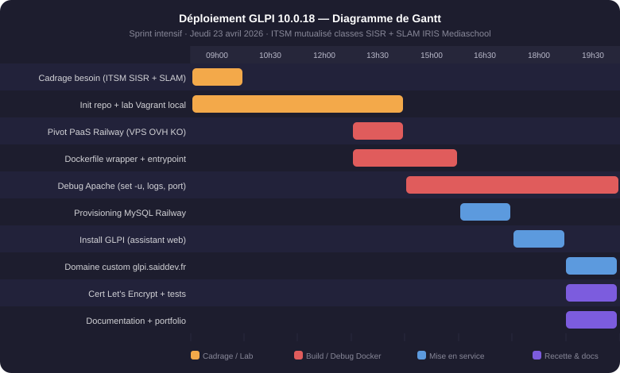

// ITSM open source — Auto-hébergé VPS Scaleway
GLPI 10.0.18 — ITSM mutualisé SISR + SLAM
📅 23 avril 2026 · Sprint intensif d'une journée
Documentation technique
Mise en place d'une instance GLPI 10.0.18 (Gestion Libre de Parc Informatique) destinée aux classes BTS SIO SISR et SLAM d'IRIS Mediaschool Nice. L'outil sert de plateforme ITSM mutualisée entre les deux promotions : ticketing helpdesk pour les incidents inter-classes, inventaire du parc pédagogique (postes salles TP, switchs, serveurs lab), base de connaissances commune SISR/SLAM, suivi des demandes d'assistance entre étudiants des deux filières. Démarche ITIL — qualification des tickets (P1→P4), CMDB, base de connaissances N1/N2, SLA.
⚠️ Précision : ce projet est un livrable scolaire pour les classes SISR (admin sys/réseau) et SLAM (dév logiciel) d'IRIS — il n'est pas lié à mon alternance Kiné@dom (Ephycient).
Architecture déployée en 2 environnements :
• Lab local Vagrant (repo sdjbrl/glpi-vagrant) — VM Debian 12 avec Apache 2.4 + PHP 8.3 + MariaDB 10.11, provisionnée par script shell. Permet itération rapide hors-ligne.
• Production auto-hébergée sur VPS Scaleway (Stardust, Debian 12) — stack Docker Compose : GLPI 10.0.18 + MariaDB 10.11 + Traefik v2.11 reverse proxy TLS. Certificat Let's Encrypt provisionné automatiquement par Traefik via ACME HTTP-01. Domaine glpi.saiddev.fr pointé en CNAME vers l'IP Scaleway.
Le VPS Scaleway constitue l'environnement de production long-terme. Le repo contient également un guide SCALEWAY-DEPLOY.md pour reproduire l'installation sur tout VPS Debian 12.
Compétences BTS SIO SISR mobilisées
Stack technique
/var/www/html/glpi/public + RewriteEnginevagrant upLivrables
- Repo GitHub
sdjbrl/glpi-vagrant(public, 14 commits) - Lab Vagrant Debian 12 reproductible (
vagrant up= GLPI prêt) - Docker Compose production Scaleway (GLPI + MariaDB + Traefik)
- Guide
SCALEWAY-DEPLOY.md(VPS Debian 12 + Docker Compose) - Instance publique HTTPS :
glpi.saiddev.fr
Critères d'évaluation
Retour d'expérience technique
-
Bypass entrypoint upstream cassé
Le script
/opt/glpi-start.shde l'imagediouxx/glpienchaîneservice apache restartpuispkillet tue son propre processus dans Docker. Solution : Dockerfile wrapper + entrypoint maison qui télécharge le tarball GLPI, génère le VirtualHost et lanceexec /usr/sbin/apache2 -D FOREGROUND. -
set -u + envvars Apache = boucle de restart
/etc/apache2/envvarsréférence des variables non définies (APACHE_CONFDIR,APACHE_PID_FILE…) qui font crasher le script avecset -u. Conserver uniquementset -o pipefail. -
Traefik v3 incompatible Docker 29
Traefik v3.3 ne reconnaît pas
network_mode: hostavec le provider Docker 29. Rétrogradation à Traefik v2.11 (dernière version stable de la branche v2). Labels Traefik v2 conservés dans ledocker-compose.yml. -
Domaine custom + HTTPS Scaleway
CNAME
glpi.saiddev.fr→ IP publique Scaleway dans la zone DNS. Traefik ACME HTTP-01 challenge sur le port 80 pour émettre le certificat Let's Encrypt automatiquement au premier démarrage.
Gestion des risques
| Risque identifié | Probabilité | Impact | Mesure de mitigation |
|---|---|---|---|
Image Docker upstream diouxx/glpi non maintenue / cassée |
Élevée | Moyen | Wrapper Dockerfile + entrypoint custom autonome qui ne dépend plus du script upstream |
| Free tier Railway épuisé / service suspendu | Moyenne | Moyen | Migration documentée vers VPS OVH commandé (guide OVH-DEPLOY.md prêt) |
| Perte de données BDD (pas de backup auto en démo) | Moyenne | Élevé | Démo non-prod (données fictives). Sur VPS OVH : mysqldump nightly + rotation 7j |
Comptes par défaut GLPI (glpi/glpi) exposés sur internet |
Élevée | Élevé | Changement immédiat des 4 mots de passe par défaut + désactivation comptes inutilisés |
PRA / PCA
Annexes
